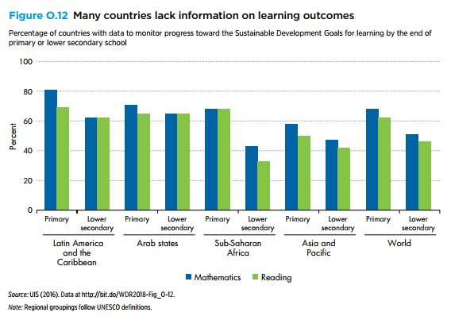
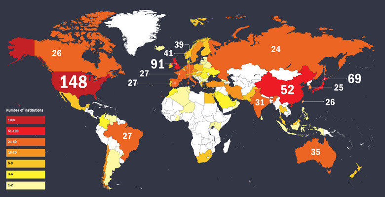

Education: A Statistical Comparison Between Education and Knowledge
What is education? Is it the portrayal of one’s academic prowess or? Some one’s ability to lead life successfully. In short, an answer that would satisfy all parties does not exist and should not exist. There should be no definition to education as it is the most vital life line of the human race, which separates us form all different organisms. One’s education never ends as we humans learn new things every day and this is what drives us forward. Now lets take a statistical look at condition of education all around the world:
Let’s take a detailed look at this chart above; it shows the average literacy rates of different parts of the world, this shows the difference between knowledge and education. In most countries students do complete their primary education but do not complete their secondary education this has a vast effect on a county. The parts where education continues that is the footfall between primary and secondary education is none or less like Arab states or in Latin America, progression is taking place and in parts like Asia or Sub-Saharan Africa the progression has come to a screeching halt or is progressing very slowly. The next chart further cements this idea:
These are the no of quality higher education institutes around the world as we see countries which provide quality higher education institutes are not only progressing but also are attracting students from various parts of the world to aid in their development. Students from India and other countries travel to the United States of America for their education as their countries do provide knowledge but not education. More over the frequent intervention of political factors and other factors hamper the over all quality of education. Certain stigmas on various subjects cause students to miss out vital information which could help them in their day-to-day life. As we see that the number of educational institutes are not the only factors in the overall educational growth of a country. The ecosystem in which these institutes operate are pay a key factor. For example in Canada the no of educational institutes are quiet less as compared to India but they are already developed but we are always developing.